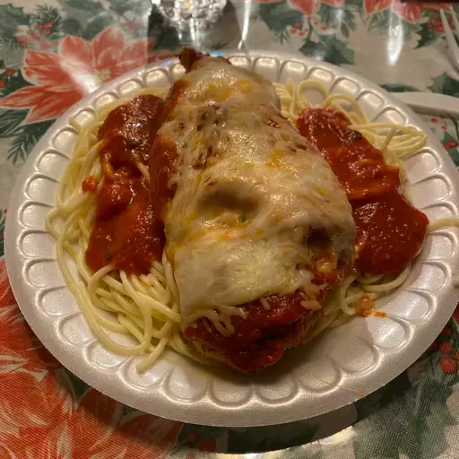

Stuffed Chicken Recipe

Description
An ad on TV sparked the idea for this recipe, and its become a family favorite. I
usually serve with fettuccini and Italian bread. It makes a very filling and delicious
meal. It also is elegant enough to serve for company.
Ingredients
- 1.5 cups shredded italian cheese blend
- 1 clove garlic, finely chopped
- 1 teaspoon dried basil
- 1 teaspoon dried oregano
- 1.5 cup grated Parmesan Cheese
- & more..
Steps:
- Preheat oven to 350 degrees F (175 degrees C).
- Combine 1 1/2 cup Italian cheese blend, garlic, basil, and oregano in a bowl. Combine Parmesan cheese and bread crumbs in a separate bowl.
- Cut one side of each chicken breast through the middle horizontally to within one-half inch of the other side. Open the two sides and spread
them out like an open book. Lightly pound chicken to flatten. Fill each chicken breast with Italian cheese blend mixture and close like a book over the filling.
Coat the outside of each chicken breast with egg; press bread crumb mixture over egg
layer to coat each chicken breast. Arrange chicken breasts in a 9x13-inch baking dish.
- Bake in the preheated oven until chicken is no longer pink in the center and the juices run clear, about 45 minutes. An instant-read
thermometer inserted into the center should read at least 165 degrees F (74 degrees C). Pour spaghetti sauce over cooked chicken; top with 1/4 cup Italian cheese blend. Bake until sauce is bubbling and cheese is melted, about 5 more minutes.
Return home